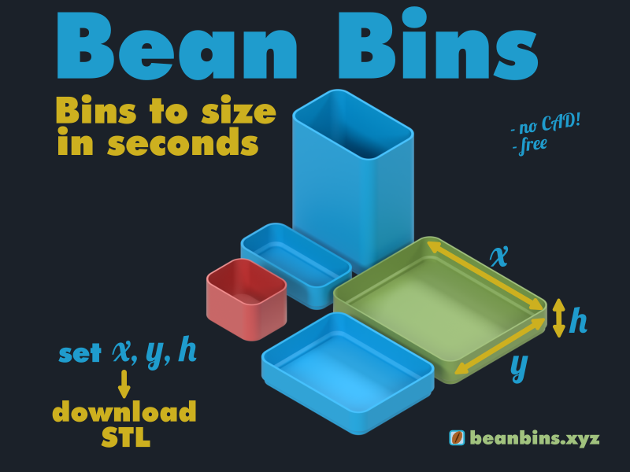
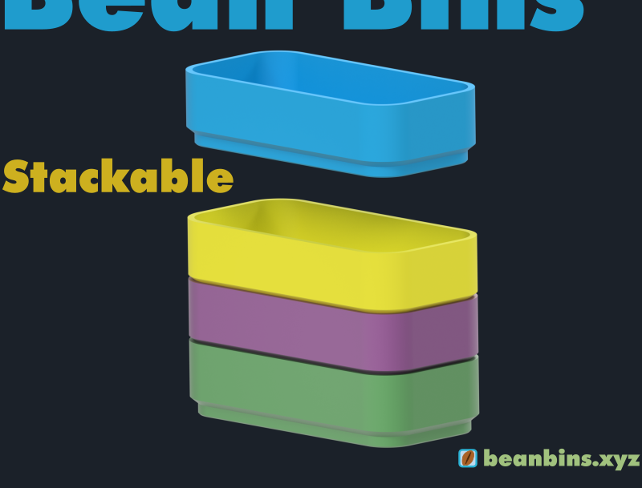

Need a bin right now, exactly to size?
Generate it and print.
Generate it and print.

First generation may take a few seconds if the server is starting up. After that, it's fast.
Model details

Core features
-
Wall thickness — Adjustable from 0.4 mm to 2.99 mm.
Thin walls (0.8–1.2 mm) work well for small bins and fast prints.
Larger bins benefit from thicker walls (1.6–1.8 mm+). - Stackable design — Optional stacking geometry allows bins to sit securely on top of each other.
- Precise sizing — Fractional millimeter input supported. Useful for tight fits (e.g. drawer dividers).
Printing behavior
- Optimized for fast printing — Works especially well with 0.6 mm and 1.0 mm nozzles.
- Vase mode — Clean, seamless bins with no visible seam artifacts. Recommended for aesthetic use (kitchen, desk).
-
Suggested setups —
- 0.6 mm nozzle → ~1.2 mm line width (small bins)
- 1.0 mm nozzle → ~1.6–1.8 mm line width (large bins)
- Larger bins (> ~50 mm) may feel flexible with thin walls — increase line width or wall thickness.
Limitations / work in progress
-
Connectors ("ears") — Experimental feature.
Currently best suited for small bins and standard (non-vase) printing.
Disabled by default and may change in future versions. -
Wall thickness limit — Currently capped at 2.99 mm due to geometry constraints.
Thicker walls will be supported in future revisions.
Why this tool exists
- One bin. Exact size. Right now.
- Designed for situations where full systems (like Gridfinity) are overkill.
-
Examples:
- Keep spice jars from sliding on a shelf
- Quick drawer dividers
- Simple storage without planning a full grid
- Faster than system-based solutions — no base plates, less material, shorter prints.
- Cleaner look — vase mode avoids visible seams for everyday spaces.
Some managed networks (e.g. universities) may intercept HTTPS traffic and block custom domains.
This can trigger browser warnings even for safe sites.
The GitHub Pages version is usually not affected and can be used as a fallback.
Source code:
Frontend: bin-generator-frontend
Backend: bin-generator-backend
Generator: bin-generator